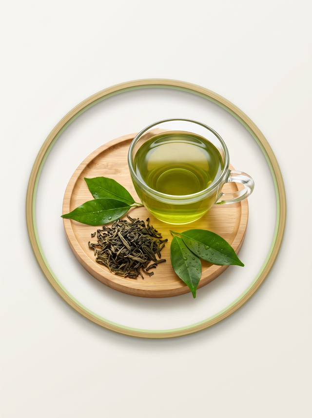
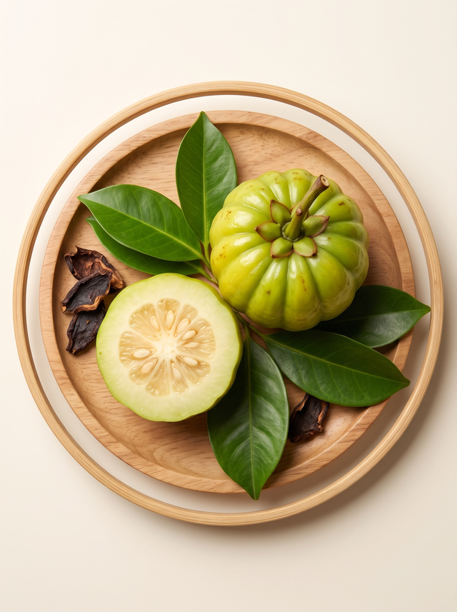

Рекламний матеріал. Ця сторінка є комерційною: ми приймаємо заявки на продукт і передаємо їх представнику бренду. Useful Habit може отримувати винагороду за оформлені замовлення.
Skineform: Природна підтримка метаболізму та вашого балансу
Рослинний комплекс у капсулах для тих, хто прагне гармонійно підтримувати процеси обміну речовин та контролювати щоденний раціон без виснаження.

Чому це важливо?
Сучасний ритм життя рідко залишає місце для регулярного режиму: нічні роботи, перекуси на ходу, дедлайни, мало сну й мало руху. Усе це поступово збиває біологічні ритми організму, а разом з ними — і щоденну роботу травлення та обмін речовин.
З віком і на тлі хронічної втоми обмінні процеси можуть сповільнюватися, апетит стає менш передбачуваним, а тяга до солодкого — сильнішою. Жодна добавка не замінить збалансованого харчування, сну та фізичної активності.
Skineform розглядається як допоміжний рослинний інструмент: комплекс екстрактів і прянощів, який може доповнювати здорові звички, а не підміняти їх.
Формула активних компонентів
Чотири групи рослинних інгредієнтів, кожна з яких відповідає за свій напрямок підтримки.

1. Зелений чай та виноградні кісточки
Екстракти — джерело поліфенолів, потужних антиоксидантів, що допомагають захищати клітини від окисного стресу.

2. Гарцинія камбоджійська
Екстракт традиційно використовують, щоб легше контролювати тягу до солодкого та відчуття голоду між прийомами їжі.
3. Артишок та ананас
Екстракти допомагають підтримувати оптимальний водний баланс та м'який дренаж, а також комфорт травлення.
4. Куркума та імбир
Порошки прянощів, які традиційно застосовують для оптимізації травлення та підтримки «теплого» метаболізму.
Які завдання вирішує продукт
- Підтримка обмінних процесів. Допомагає організму ефективніше працювати у складі збалансованого раціону.
- Допомога у контролі апетиту. Може полегшувати дотримання режиму харчування.
- Підтримка нормального рівня глюкози. У поєднанні зі здоровим харчуванням.
- М'який дренажний ефект. Підтримка водного балансу організму.
Прості правила використання

- Дозування: 1–2 капсули на добу під час їди, запиваючи склянкою води.
- Курс: від 30 днів. Точну схему уточнюйте на упаковці та у лікаря.
- Поєднуйте прийом зі збалансованим раціоном і щоденною активністю.